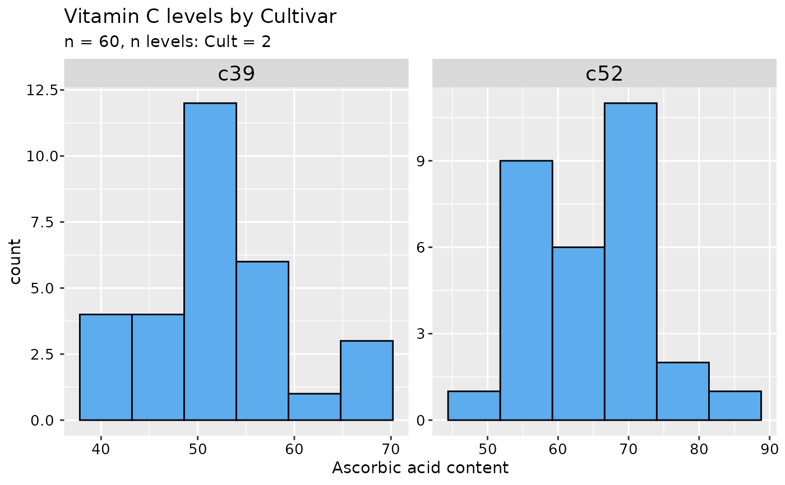
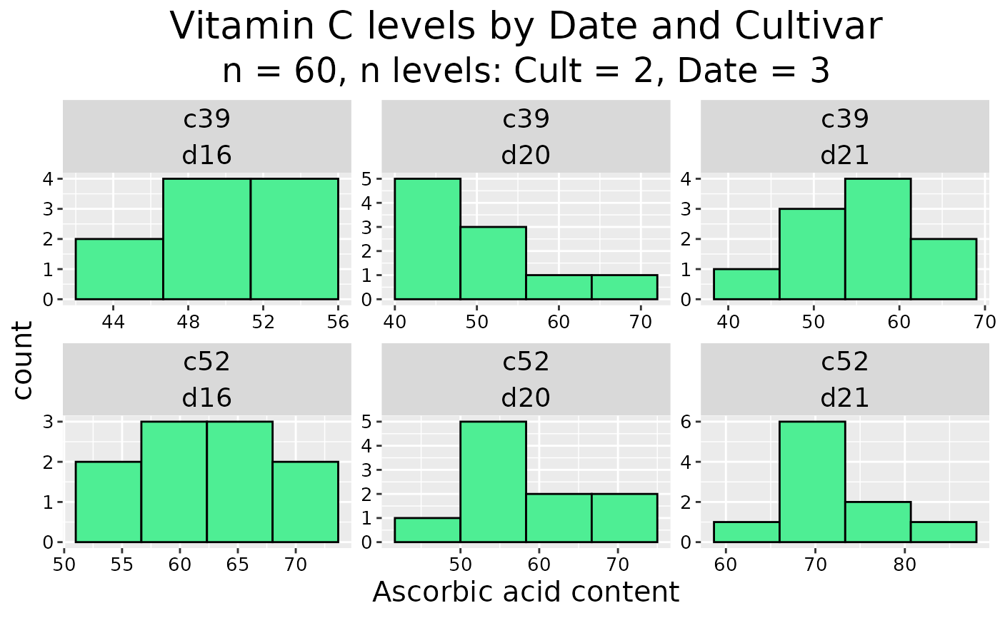
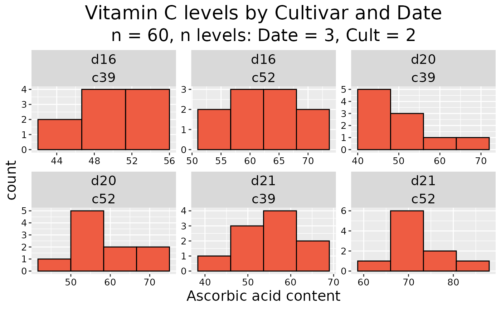

Faceted Histogram
facet_histo.RdProduce neatly formatted histograms for a numeric variable in a data frame, faceted by one or more categorical variables.
Arguments
- .data
a data frame, or a data frame extension (e.g. a tibble).
- x
the quoted name of a
numericvariable in.datato be plotted.- ...
<
dynamic-dots> quoted names of one or morefactorsor character vectors in.datadefining faceting groups.- .main
a character string for the main plot title; default Histogram of followed by the name of x.
- .sub
a character string for the plot subtitle; default the total number of observations and the number of levels of each faceting variable.
- .xtitle
a character string for the x-axis title; default the name of x.
- .col
a character string for the fill colour; default
"steelblue2".- .bins
integerthe number of bins for the histogram; defaultNULL.
Value
A ggplot.
Details
Uses the ggplot2 package. Formatting of titles etc. is deliberately minimal so that the
user can set their own preferences as shown in the examples. The ... argument may be omitted to obtain
a simple unfaceted histogram. A set of variables or expressions defining faceting groups may be quoted using
vars and injected into the ... argument with the rlang
!!! splice-operator, see examples.
Categorical variables defining the faceting groups in the ... argument must be factors or character
vectors that will be coerced to factor using as.factor. If not supplied in the argument
.bins, the number of bins for the histograms is calculated as the square root of the total number of
observations divided by the product of the numbers of levels of the variables defining the faceting groups.
See also
facet_wrap, ggplot, hist,
truehist and vars.
Examples
## Using cabbages dataset from {MASS} package
# \dontshow{
if (!requireNamespace("MASS", quietly = TRUE))
warning("package 'MASS' must be installed")
try(cabbages <- MASS::cabbages)
# }
## Without faceting variables
cabbages |> facet_histo(VitC)
## One faceting variable
cabbages |> facet_histo(VitC, Date)
## Customise titles
cabbages |> facet_histo(
VitC, Cult,
.main = "Vitamin C levels by Cultivar",
.xtitle = "Ascorbic acid content"
)

## Set ggplot preferences
oldtheme <- theme_get()
theme_update(
plot.title = element_text(color = "black", size = 20, hjust = 0.5),
plot.subtitle = element_text(color = "black", size = 18, hjust = 0.5),
axis.title.x = element_text(color = "black", size = 15),
axis.title.y = element_text(color = "black", size = 15),
legend.position = "none"
)
## Two faceting variables
cabbages |> facet_histo(
VitC, Cult, Date,
.main = "Vitamin C levels by Date and Cultivar",
.xtitle = "Ascorbic acid content",
.col = "seagreen2"
)

## Unquote-splice a list of faceting variables
fvars <- ggplot2::vars(Date, Cult)
cabbages |> facet_histo(
VitC,
!!!fvars,
.main = "Vitamin C levels by Cultivar and Date",
.xtitle = "Ascorbic acid content",
.col = "tomato2"
)

## Retrieve plot data for the simple case without faceting
cabbages |> facet_histo(VitC) |>
ggplot2::ggplot_build() |> _$data[[1]]
#> y count x xmin xmax density ncount ndensity
#> 1 4 4 39.92857 36.85714 43.00000 0.010852713 0.26666667 0.26666667
#> 2 9 9 46.07143 43.00000 49.14286 0.024418605 0.60000000 0.60000000
#> 3 15 15 52.21429 49.14286 55.28571 0.040697674 1.00000000 1.00000000
#> 4 11 11 58.35714 55.28571 61.42857 0.029844961 0.73333333 0.73333333
#> 5 8 8 64.50000 61.42857 67.57143 0.021705426 0.53333333 0.53333333
#> 6 10 10 70.64286 67.57143 73.71429 0.027131783 0.66666667 0.66666667
#> 7 2 2 76.78571 73.71429 79.85714 0.005426357 0.13333333 0.13333333
#> 8 1 1 82.92857 79.85714 86.00000 0.002713178 0.06666667 0.06666667
#> flipped_aes PANEL group ymin ymax colour fill linewidth linetype alpha
#> 1 FALSE 1 -1 0 4 black steelblue2 0.5 1 NA
#> 2 FALSE 1 -1 0 9 black steelblue2 0.5 1 NA
#> 3 FALSE 1 -1 0 15 black steelblue2 0.5 1 NA
#> 4 FALSE 1 -1 0 11 black steelblue2 0.5 1 NA
#> 5 FALSE 1 -1 0 8 black steelblue2 0.5 1 NA
#> 6 FALSE 1 -1 0 10 black steelblue2 0.5 1 NA
#> 7 FALSE 1 -1 0 2 black steelblue2 0.5 1 NA
#> 8 FALSE 1 -1 0 1 black steelblue2 0.5 1 NA
## Retrieve the histogram bins - PANEL indicates for which facet
cabbages |> facet_histo(VitC, Cult) |>
ggplot2::ggplot_build() |> _$data[[1]] |>
dplyr::select(PANEL, xmin, xmax, count)
#> PANEL xmin xmax count
#> 1 1 37.8 43.2 4
#> 2 1 43.2 48.6 4
#> 3 1 48.6 54.0 12
#> 4 1 54.0 59.4 6
#> 5 1 59.4 64.8 1
#> 6 1 64.8 70.2 3
#> 7 2 44.4 51.8 1
#> 8 2 51.8 59.2 9
#> 9 2 59.2 66.6 6
#> 10 2 66.6 74.0 11
#> 11 2 74.0 81.4 2
#> 12 2 81.4 88.8 1
## Restore ggplot settings
theme_set(oldtheme)
# \dontshow{
rm(cabbages, fvars, oldtheme)
# }